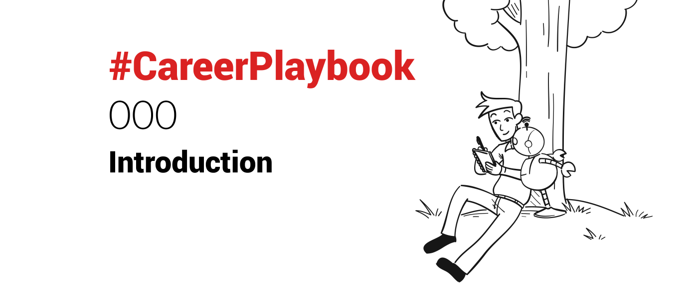

New year, new resolution: #CareerPlaybook will be a series of posts from me this year.
Why? (really.. why?)
As I have built a somewhat successful career (so far!) – with blood (do paper cuts count?), sweat and tears at times – I have been mentoring quite a few people along the way. In my (former) teams, and now regularly via introductions.
As the feedback is usually positive (though it could be just down to people being just nice and polite), and I enjoy helping others, thinking this series might be the best way to share my own guiding principles.
It does not mean that I know it all – far from it, I keep learning every day. Just sharing my experience.
“Who are you to give advice?” some of you will probably think.
The answer is…
My life is not extraordinary – just a bit weirder and different than average perhaps 🙂 – but I have done well for myself (so far). As individual contributor in Sales (both in large companies and startups), leadership positions (VP Sales and then Managing Director at VC-backed B2B SaaS startups), and entrepreneur (founded and exited successfully a bootstrapped startup – a Groupon for companies operating private jets).
I am just someone trying to help, and “giving back” by sharing what has worked for me.
For long, I held off on sharing – thinking “everything is already out there”. But I realise now that when I learn, I do so from various sources, not a single one. So I’m adding myself as a potential source for others to learn from.
I am also thankful to all people I encountered in my professional life so far, who have taught me – knowingly or not – so much. I’ll do my best to credit and thank people in my posts as I go along.
And now that I both live and work remotely, in the German countryside, I hope to connect more with people online. New people from whom I can continue to learn new things, and perspectives.
Selfishly, I also hope that a more consistent practice of sharing will improve my own writing. Time will tell. The bar is low for now 😁
There is another potential reason for this post series to exist: comedian Michelle Wolff (who made a splash at the White House Correspondents Dinner last year), said “blog posts are like conversations no one wanted to have with you”.
So I’ll let you decide what the true origination of this series is 😁
Who is it for?
I am writing to my younger self in mind (and my kids when they grow up), hoping it can help someone, like it would (have) me.
I am also inspired by the numerous conversations I have had over the years, mentoring and helping others – or getting mentored and helped myself.
A lot of my mentees have been in Sales, but the scope has broadened over the last couple of years to include newly appointed (Sales) leaders, and founders (since my successful first exit last year). Usually referred to me for mentoring and help.
So I hope there will be a bit for everyone in this series.
What will I do
I’ll aim to share a learning 2-3x/week.
So 100+ tips & learnings for the year to come.
Both on Linkedin, and here on my blog for the full expanded version.
Some of these learnings I have acquired the hard way.
Some I have acquired recently – others I have been applying for the last 20 years.
Some come naturally to me – others I still struggle with to apply consistently (and have to remind myself of regularly).
I have always tried to share my knowledge and providing inputs to people around me, based on my mindset, experience and learnings.
Do not expect Simon Sinek‘s-level truth bombs though – just follow him for great insights and inspiration. Just a collection of tips and learnings that have helped me.
Why is it called “Playbook”?
While some see the name as playful – which is great, I do see business as a game – I’m using “playbook” in the sense of “a set of rules or suggestions that are considered to be suitable for a particular activity, industry, or job“
In sports, the playbook is something a coach writes as s/he goes. It’s a record of things that have been tested, and worked.
Plays that have worked well.
What to do. And what not to do.
So this is my current – and ever evolving – career and business playbook.
Strategies and tactics that have worked for me. A collection of learnings, based on my own experience. With some originating from others’ playbooks.
Helping you… hopefully.
I hope some of the learnings I will be sharing will work for you, but that I cannot guarantee.
This is MY #CareerPlaybook after all.
You might not agree with some of it.
It’s up to you to define yours… and perhaps share it too, now or in the future.
Perhaps you will be able to include some of my learnings in your own journey.
Please do share your own experience on these tips, and provide feedback.
I always have a small number of people I mentor, and touch base with on a regular basis.
Happy to help where I can, so don’t hesitate to reach out.
“A writer who waits for ideal conditions under which to work will die without putting a word on paper.”
-E.B. White
So here we go..
On to 2020…
—
Thank you Amy Shott, Katrin Grunwald, Justyna Boboryko, Courtney Fanning, Ankit Sagar, Moritz Dausinger, Malcolm Macnaughtan, Sarah Counts, Lev Cribb and especially Erika Le Doze and Chuck Brotman for your inputs and help getting me started! (and Dustyn Smith for nudging me to write more) 🙏🏼
It takes a village… 😁
PS: if you wonder (someone did already) – the drawing is supposed to represent me, in my German countryside, putting down my learnings on (digital) paper, while building OfficeBots. I’ll use it again for posts where my inspiration left me hanging for a better way to illustrate the topic 😁